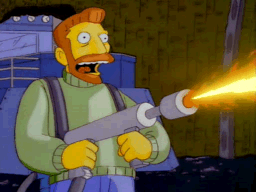

AK-47
 De: La Frikipedia, la enciclopedia extremadamente seria.
De: La Frikipedia, la enciclopedia extremadamente seria.

|
PELIGRO
Este artículo o sección no es más que una torpe lista. Si crees que vale la pena, edítalo para mejorar su calidad y excelencia
|
| De la serie armas de ayer y hoy:
|
| AK-47
|
|
|
| Fecha de invención
|
A mediados de s.XX (lástima, hubiera servido de mucho en la I y IIGM)
|
| Letalidad
|
Mucha, y más entre narcos
|
| Peligrosidad (para uno mismo)
|
¿No lo acabas de leer arriba?
|
| Es efectivo contra
|
Narcos, policías, etc...
|
| Personas que mata por minuto
|
Unas 50, quizas 60
|
| Alcance (Si lo tiene)
|
Menos de 3m (no podía ser tan perfecta)
|
| ¿Sirve en la actualidad?
|
Principalmente en México y la Rusia Soviética
|
| Nivel de Frikismo
|
Medio bajo
|
| Dificultad de uso
|
Depende del usuario
|
| Precio
|
Altísimo (hay quién las compra bañadas en oro)
|
| ¿Es recomendable?
|
Sí, y más si se es narco o exespía del CCCP
|

¿Para qué quieres dinero, si tienes una de estas?
El AK-47, conocido en México con el nombre de cuerno de chivo, y en su país natal, Rusia, con el nombre de kalishnikova, es un fusil de asalto creado por el comunista Mijail Kalashnikov, el cual no fue producido en masa sino hasta 1952, ya que fue diseñado en 1947, a eso se debe el 47, de su año de diseño.
Historia
Un día como cualquier otro, durante el frío y ortero invierno ruso, un comunista estaba aburrido en su cuarto de un hospital igual de ortero.
Un vigotudo algo loco, llamado Stalin, mas conocido como Mario por sus bigotes, decidió un día cagar a balasos a los alemanes por haber invadido a Rusia. Mijail, como buen pelotudo que era, apenas llego al campo recibió una bala en el culo, muy cerca del centro, (esto solo te lo cuento yo, porque la p&$@ de Wikipedia te dirá que se lo dieron en la pierna, pero no, fue en el culo), y entonces lo llevaron a un hospital mientras que sus compañeros se cagaban a tiros con armas muy mierda. Que eran muy parecidas a las alemanas, y entonces BANG!!!
¡Al muy pelotudo se le ocurrrio la idea de crear una ametralladora!
La llamo AK-47, refiriéndose a la frase "Acá solo hace 47ºC bajo cero! (Y el pelotudo creía que 47 grados bajo cero era una temperatura excelente, pero en Rusia hacia 142452752742545254675656 bajo cero y en Alemania 20 grados, Masomenos)
Cundo le mostró su invento al Mario, a este no le gusto, pero, no le pareció mal la idea de cagar a balasos mucho mas rápido,así que acepto el trato. Y desde entonces el AK-47 a invadido nuestro mundo.
(desde esa entrevista entre Stalin y Kalashnikov, Mijail jamas camino igual, pero, por lo menos se hizo famoso ¿No?)
Características
- Es la versión mejorada de la AK-46, que cayó en el olvido.
- Es el fusil de asalto mas vendido y mas fabricado del mundo.
- Es el fusil de asalto mas copiado del mundo.
- Dispara.
- Lo que dispara son balas, no supositorios.
- Usa el calibre 7.62x39 sovietico.
- Es un fusil sovietico.
- Hasta un niño la puede usar y lo hacen los del medio oriente, futuros integrantes del ISIS.
- Usa cargadores de 30 balas (a veces parece que tiene mas)
- Sale en mas peliculas que Morgan Freeman y que Rocco Siifredi
- Sale en mas videojuegos que Mario.
- Sale en el videojuego Super Mario Bros 3.
- Pesa.
- Puede volarte la cabeza de un solo tiro. (No me digas, Todas las armas hacen eso pendejo de mierda, Esto no es Gta)
- En los videojuegos tarda 20 años disparando sin parar para matar a alguien.
- Es fiable, potente y segura.
- Puedes sumergirla en agua, zumo de fresa, gasolina, bebidas alcohólicas, barro, arena, tierra, flemas, lefa, y cualquier otro fluido que la mente pueda imaginar, y funcionará sin problema alguno.
- Arma favorita de la gente que le gusta lo tembleque. ARMA PARA PAJEROS.
Putin... el eterno marica, amante de estas armas
Un dia como cualquier otro, Vladimir Vladimirovich Putin andaba caminando por la plaza roja golpeando osos y homosexuales cuando se dio cuenta que seria mucho mas facil hacerlos m*$#&a con un arma.
Entonces, su novio y primer ministro Dmitri Medvedev aparecio con su politica antiarmas, y despues de haberle dado un tiro en el culo, Putin salio a matar tigres y gatitos. aunque el haya admitido que el gustan las cosas tiernas...
Debemos aclarar que "tierno" en el volcabulario de el es igual a "para nada tierno".
DESDE ENTONCES EL MUY PUTO RIDICULO Y MARICON se volvio amate de matar osos, tigres y maricas con esta fabulosa arma...
¡¡¡Viva el AK-47!!!
Verdades
- La inventó el counter-strike
- Su construcción no requiere cuernos de un chivo ni de ningún otro animal.
- Es un objeto mistico, utilizado SIEMPRE por los malos malotes.
- Si cae en manos americanas se desintegra tras 5 disparos.
- Si cae en manos de Rambo, tiene munición infinita.
- Si cae en manos de Chuck Berry, se usa como microfono
- Si cae en manos de Calderón, termina disparándole en el pie
- Si cae en manos del prota de "Commando" ("suarsenaguer") tiene munición infinita hasta que la tiras al suelo.
- Si la llevan los vietnamitas, vale menos que una tostadora en Africa.
- Si la lleva Bin Laden, es porque hace una transmisión, o pidiendo una "TaliPizza"
- Es peor que la M16A1, la M16A2 y el M4A1 en las pelis americanas, pero la matrioska gana a todas ellas.
- Es mejor que todas esas m*$#&as en la vida real.
- Tony Montana murió por usar otro fusil de asalto (usaba un M16A2 con lanzagranadas M203, no es coña)
- Existen versiones mejores y mas modernas, pero los occidentales siguen pensando que es el unico AK del mundo, pobres credulos.
- Casi todos los personajes famosos usaron alguna vez uno de estos o mataron al portador.
- Incluso Chuck Norris uso uno, pero solo una vez, ese dia se conoce como el Big Bang.
- Este fusil no se puede usar a favor de los EEUU, por ello, si lo haces, una patada voladora te destruirá.
- Mozambique la tiene en su bandera Zimbawe en su escudo
- Son la mayor exportación de Rusia, junto con el Vodka, el Caviar y los novelistas suicidas.
- Los m*$#&a, pero los tanques son los mejores del mundo.
- Soy ruso.
- Tu no.
- El KI de un AK es equivalente a un super sayan de nivel 4.
- No se puede medir porque es un objeto inanimado.
- En la vida real no tiene munición infinita.
- Si crees que escribo lo primero que me viene a la cabeza, tienes razón, pero todo tiene logica y espero que os haga gracia.
- Deja de leerme la mente.
- Si quieres comprar uno, contacta con Yury Orlov, alias, El Señor De La Guerra.
- Eso es una peli, y ese tio es el prota.
- Si en Star Wars salieran AKs, solo duraria 30 minutos, por eso no salen, ademas, en los 70' no habia tanta sangre falsa.
- Si ves a Chuck Norris con uno, corre a despedirte de tu familia, pues el mundo llega a su fin.
- El nombre original era "metrolletovski para matar cerdos americanos capitalistas", pero lo quitaron por motivos de marketing.
- Soy ruso, no es coña.
- Vodka Vodka, caviar perrestroika y perreo.
- Causó la destrucción de los wombats.
- Causó la extinción de los dinosaurios.
- Incluso un niño puede usarlo, y lo hace, ya que el uso de la matrioska está lejos de su alcance intelectual.
- Un cani no puede usarlo, no tiene suficiente inteligencia.
- La version alien de la AK-47 la inventaron y usaron los Wookiees.
- Chavez la usa para ponerle supositorios a su esposa.
- Puede derribar aviones
- Y barcos, tanques, furgonetas de gitanos, cohetes espaciales, bicicletas, motos y cualquier otro medio de transporte
- Si le pides a un ruso que diseñe unos zapatos te diseña algo que parece una caja de zapatos. Si le pides que diseñe algo para matar invasores se convierte en el puto Einstein y te diseña algo como el Ak- 47.
- Sirve para matar a tu suegra
La demanda por parte de tortillinas tia rosa y el osito garabatoso de BIMBO
Oso albino, tan tierno que hasta cae mal...
Esta compañia habia demandado al creador de este rifle de asalto, por el concepto de derechos de autor, debido a que es conocida
como cuerno de chivo, y uno de sus productos de esta compañía son los cuernitos tia rosa, por lo cual hubo una confusion con sus productos, pero finalmente toda esta chingadera se resolvio, pagando mijael kalisnikov una indemnizacion, por mas de 45,000 rublos rusos, al puto oso albino y la tia rosita.
Personajes famosos que usan o usaron o usarán los AK
 Uno de sus usuarios, con una AK-47 modificada
- Rambo
- James Bond
- Steven Seagal
- Osama Bin Laden
- El Negro de San Andreas
- El blanco de Vice city.
- El otro blanco de Liberty city.
- El otro negro de Vice city (Stories, Pendejo)
- Hank Scorpio
- Doctor Maligno
- Solid Snake
- Johnny Sasaki En el MGS2 usa un Ak74 y en el MGS3 usa un Ak47
- Bush, en un cuarto oscuro lejos de las camaras, incapaz de admitir que su pais es una m*$#&a
- Vladimir Vladimovich Putin, un su Dacha de Sochi, donde pronto se celebraran las olimpiadas de invierno de 2014
- 5000000 de negros a los que Yury Orlov vendió armas
- El ejército ruso
- El ejército chino
- El ejército iraní
- El ejercito Catalán
- El ejército iraquí
- El ejército Cani. Usan las que funcionan con agua
- Muchos mas ejércitos.
- Los moros malos de las pelis americanas
- Los negros malos de "Black Hawk Derribado"
- Los otros malos de las pelis americanas
- Heidi
- Esperanza Aguirre
- Los narcos colombianos
- Los narcos Bolivianos
- Los narcos panameños
- Los narcos marroquies
- Los narcos mexicanos
- Los narcos peruanos
- Las F.A.R.C.
- Los hombres lobo
- La mayoria de organizaciones delictivas armadas
- Un americano gordo de Texas que no sabe que el AK-47 es ruso.
- Senderistas
M4A1 vs AK47
Lo único que puedo decir de esto es que las dos son unas grandes armas y que 1ero la M4A1 es muy precisa y llega muy lejos pero que quita menos que un pedo de un maricón y la AK47 se desvía mas que una escopeta de feria, pero basta que te de en la uña del pié para volarte la mitad del cuerpo y dejarte en silla de ruedas o en su defecto te mueres.
Autor(es):
- Doctor grijander
- Juan-Carandell
- Frikiman
- Aque
- Alex2610
- Azulejos
- El Sevillano
- Frikih
- Diegocon13
- Mercenario1945
Frikipedia 2005-2016, Licencia
GFDL 1.2 - Extraído por FrikiLeaks